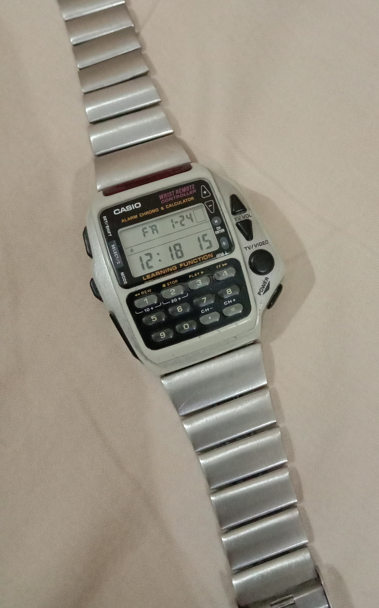

The Remote That Listened Before It Spoke
In 1992 Casio put a TV remote on a wristwatch — then gave it a learning port: hold any other remote against it and the watch copies its infrared code. A wearable that speaks the dialect of machines it has never met, and is reliable because it refuses to understand them.
Almost every infrared remote ever made is a one-way instrument. You press a key, a packet of pulses leaves the plastic, and nothing comes back — no acknowledgement, no retry, no error. The remote shouts into the room and trusts the room.
So the oddest thing about the Casio CMD-40 (1992) is not that Casio squeezed a television remote into a wristwatch. That alone is strange enough: an IR emitter on the watch's top edge, a chunky red button that fires a channel change, a small LCD box that blinks when the signal actually goes out. Casio called the line the "Wrist Remote Controller," and the pitch is easy to understand: the handset disappears into the handset you already wear.

The part of that line worth keeping, for a museum, is not the collapse of the remote onto the wrist. It is the least fashionable feature attached to it: a learning port.
Here is the gesture. You put any other remote about three centimetres from the watch. You press the button on that remote — the one whose function you want. The CMD-40 receives it: the watch's own IR sensor reads the pattern of flickering light coming out of the remote that shipped with the television, and copies it into memory — up to sixteen codes. Then the watch can speak the television's dialect, and the original remote can vanish into a drawer.
This is not a remote that knows every brand. It is a remote that can be taught. Preset tables for dozens of TV and VCR makes were the ordinary, catalogue-driven way to be universal: list the world's codes and hope yours is on the list. The learning function is the other way: instead of a table of vocabularies, the machine contains an ear.
A remote's burst is not "a signal" in the abstract; it is a timing pattern of pulses, and the CMD-40 has to capture that pulse train for a key it was never programmed to recognize. The watch has become a tape recorder for an infrared language, and its memory is filled with scraps of other machines, item by item, by hand.
What I find worth keeping is not the learning — universal remotes learned codes before this one, and their successors still do. It is the anatomy that makes the learning possible. Every other remote in this museum is a machine that points outward. The CMD-40 is a rare input device with both an emitter — so it can speak to the television — and a receiver, so it can be taught that language by another remote. It is the same two-part shape — a mouth and an ear — that would later define talking terminals and wake-word speakers, except the CMD-40 keeps it in a case the size of a matchbox and the teaching happens through the air, at three centimetres, between two pieces of plastic.
The museum already tracks how the wrist learned to hold what a desktop used to hold. The Seiko RC-1000 (1984) squeezed names through a calculator keypad and dumped them onto a watch over a cable; the Seiko Data-2000 kept the watch sealed and pushed data in through a dock. The Casio VDB-1000 went the other way: its whole face was a touchscreen you typed on, so the authoring moved onto the wrist and the author became the wearer. The CMD-40 is the remote's own line of descent: the Seiko watches held data; the CMD-40 held command over other machines. The ROLM CBX put a telephone exchange on a desktop console; the CMD-40 put a different kind of console on the wrist.
Which is also why the endurance is telling. Casio sold the CMD-40 from late 1992 until roughly 2005 — longer than most of the televisions and VCRs it was built to imitate. That is the endurance of a tag that can be retaught.
There is a popular idea of interface progress in which the machine becomes more intelligent about us: it recognizes what we want, it anticipates us, it speaks every dialect so we don't have to. The CMD-40 takes the opposite path to the same convenience. It has no theory about what a remote is. It does not know what a channel change means. It copies a pattern of light clicks and performs them again — faithfully, and without understanding a single one.
And that is precisely what made it reliable. A remote that guesses at a code will be wrong about some of them. A machine that refuses to understand and merely repeats what it heard will be exactly as wrong as the remote it copied, and no more. That is a smaller claim than the smart remote we were promised, and a truer one. Sometimes the most respectful interface between us and the world is an open ear.
— Beepy